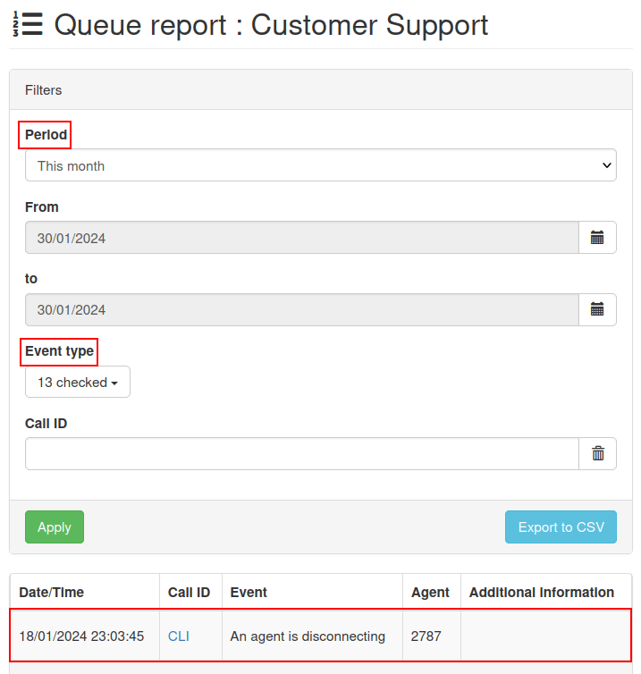

Cola de llamadas¶
La cola de llamadas es un sistema que organiza y enruta las llamadas entrantes. Cuando los clientes llamad a una empresa y todos los trabajadores están ocupados, la cola de llamadas acomoda la llamada en orden secuencial dependiendo de cuánto hayan llamado.
La persona que haya realizado la llamada tendrá que esperar hasta que un empleado pueda atender su llamada.
Usar un sistema de cola de llamadas reduce el estrés de los empleados y ayuda a mejorar la confianza de los clientes. Muchas empresas usan el sistema para establecer las expectativas de los clientes y para distribuir la carga de trabajo de forma equitativa entre todos los empleados.
En este documento explicamos el proceso para configurar el sistema de cola de llamadas (con ajustes avanzados) y cómo iniciar sesión en la cola de llamadas desde la base de datos de Odoo.
Ver también
Agregar una cola¶
Para agregar una cola de llamadas en Axivox, vaya a la consola de gestión de Axivox. En el menú izquierdo haga clic en Queues (colas) y después en Add a queue (agregar una cola). Esto mostrará un formulario en blanco de New queue (cola nueva) con varios campos que debe llenar.
Nombre¶
Cuando aparezca la página New queue (cola nueva) ingrese el Nombre de la cola.
Extensión interna¶
Seleccione una extensión interna para la cola. Este es el número que los usuarios de la base de datos deben detallar para iniciar el proceso de inicio de sesión para la cola.
Estrategia¶
Sigue el campo estrategia, el cual determina el enrutamiento de llamada de las llamadas que se reciben en esta cola.
Las opciones disponibles en el menú desplegable de Estrategia son:
:guilabel:Llamar a todos los agentes disponibles`
Llama al agente que ha recibido la llamada por más tiempo
Llama al agente que ha recibido menos llamadas
Llamar a un agente al azar
Llamar a los agentes uno después del otro
Llamar a los agentes uno después del otro empezando con el primero en la lista
Seleccione la estrategia que mejor solucione las necesidades de su empresa para clientes en la cola.
Tiempo de espera máximo en segundos¶
En el campo Tiempo de espera máximo en segundos determine el mayor tiempo que un cliente esperará en la cola antes de que vaya al buzón de voz, o a cualquier otro lugar al que se le dirija en un plan de marcación. Introduzca un tiempo en segundos.
Duración máxima de la llamada a un agente¶
En el campo Duración máxima de llamada a un agente determine el tiempo máximo que podrá sonar la línea de un agente antes de que se pase a otro agente, o a cualquier otro lugar al que se le dirija en un plan de marcación. Introduzca el tiempo en segundos.
Ver también
Para obtener más información sobre los planes de marcado, consulte:
Agregar agentes¶
Los últimos dos campos en el formulario New queue (nueva cola) involucran agregar agentes. Al agregar agentes estáticos y agentes dinámicos son dos métodos preconfigurados que se usa para agregar agentes a la cola de llamada durante la configuración.
Agentes estáticos¶
Cuando se agregan agentes estáticos estos agentes se agregan de forma automática a una cola sin tener que iniciar sesión para recibir llamadas.
Agentes dinámicos¶
Cuando se agregan agentes dinámicos estos agentes pueden ingresar a esta cola. No inician sesión de forma automática y tienen que iniciar sesión para recibir llamadas.
Asegúrese de Guardar los cambios y haga clic en Aplicar cambios en la esquina superior derecha para implementar el cambio en producción.
Conexión del agente¶
Hay tres formas en las que los agentes de llamadas pueden conectarse a la cola de llamadas de Axivox:
Los agentes dinámicos se conectan en automático.
El gerente ingresa agentes específicos mediante la Consola de gestión de Axivox.
El agente se conecta a la cola en Odoo, a través del widget VoIP.
Ver también
Consulte la documentación sobre cómo configurar Agentes dinámicos en la consola de gestión de Axivox.
Conectarse desde la cola de Axivox¶
Una vez que haya terminado la configuración inicial de la cola de llamadas y haya guardado e implementado los cambios, el gerente puede ingresar a la consola de gestión Axivox y conectar a los agentes dinámicos a la cola de forma manual.
Para conectar un agente, haga clic en Queues (colas), ubicado en la columna del lado izquierdo. Así se mostrará el tablero de Queues en donde se mostraran un par de columnas diferentes:
Nombre: nombre de la cola.
Extensión: número de la extensión que se tiene que marcar para llegar a la cola.
Conexión del agente: número que marcar para ingresar a la cola.
Desconexión del agente: número que marcar para cerrar sesión en la cola.
Agentes conectados: nombre del agente que está conectado a la cola.
Estos son los botones disponibles en el tablero Queues (colas):
Conectar un agente: conectar a un agente de forma manual a la cola.
Reporte: obtenga un reporte sobre la cola.
Borrar: borrar la cola.
Editar: cambiar los ajustes de la cola.
Cuando los agentes se conectan a la cola, o están hablando con un cliente, aparecerán en la columna Agentes conectados.
Si son agentes estáticos siempre se mostrarán como conectados.
Para conectar a un agente haga clic en el botón naranja llamado Conectar un agente. Después, seleccione el nombre del agente que quiera desde el menú desplegable y haga clic en Conectar.

Ver también
Para más información sobre agentes estáticos y dinámicos, vea esta documentación:
Informe¶
Haga clic en Reportes para revisar el reporte de una cola en específico, así se podrá ver quién se conectó cuándo y qué llamadas entraron y salieron de la cola. Esta información se muestra en una página separada de Reporte de cola cuando hace clic en el botón Reportes.
Los reportes se personalizan por fecha en el campo Periodo y se especifica en los campos de y para. La información se puede organizar por Tipo de evento e ID de llamada.
Una vez que se realicen las configuraciones personalizadas haga clic en Aplicar.
Cada reporte se debe exportar a un archivo CSV para hacer un mejor uso y analizarla mejor. Esto se hace con el botón Exportar a CSV.
Cuando se hace clic en el tipo de evento aparecerá un menú desplegable con las siguientes opciones_
El cliente colgó
Un agente está llamado
Un agente se está desconectando
La llamada terminó (el agente colgó)
La llamada terminó (el cliente colgó)
El cliente está hablando con un agente.
Alguien está entrando en la cola
El cliente salió de la cola (no hay ningún agente conectado)
El cliente salió de la cola (límite de tiempo)
Nadie está respondiendo
Nadie está respondiendo, el cliente colgó
Transferir
Transferencia de llamada a ciega

No hay límite sobre cuántas opciones se pueden seleccionar desde el menú desplegable Tipo de evento.
Al hacer clic en Marcar todos se seleccionarán todas las opciones disponibles en el menú desplegable y si hace clic en Desmarcar todas quita todas las selecciones en el menú desplegable.
Para seleccionar un tipo de evento individual, haga clic en la opción deseada en el menú desplegable.
Conectar a la cola en Odoo¶
Los agentes dinámicos pueden conectarse de forma manual a la cola de llamadas Axivox desde el widget de VoIP de Odoo una vez que haya configurado la aplicación VoIP para cada usuario en Odoo.
Ver también
Para acceder al widget VoIP haga clic en el icono ☎️ (teléfono) ubicado en la esquina superior derecha de la pantalla, puede acceder desde cualquier ventana dentro de Odoo.
Ver también
Consulte la siguiente documentación para obtener más información sobre el widget VoIP de Odoo: Widget de VoIP.
Para que un agente se conecte a la cola de llamadas, solo tiene que marcar el número de Conexión de agente y presionar el botón verde de llamada con el icono 📞 (teléfono) en el widget VoIP. Después el agente escuchará un mensaje corto de dos segundos en el que se indica que el agente inició sesión. La llamada terminará de manera automática (se desconecta).
Para ver a los agentes conectados en la cola de llamada, vaya a la consola de gestión de Axivox y haga clic en Queues (colas) ubicado en la columna del lado izquierdo.
Después, haga clic en el botón verde Refresh (Actualizar) en la parte superior de la columna Connected agents (Agentes conectados). Cualquier agente (estático o dinámico) que esté conectado a la cola de llamadas aparecerá en la columna a un lado de la cola a la que está conectado.
Para cerrar sesión de la llamada, abra el widget VoIP de Odoo, marque el número de Agent disconnection (desconexión del agente) y presione el botón verde con icono 📞 (teléfono). El agente se desconectará de la cola de llamadas después de un mensaje corto de dos segundos.
Para hacer que un agente dinámico cierre sesión en la cola de forma manual, vaya a la consola de gestión de Axivox y haga clic en Colas, ubicado en la columna izquierda. Después, haga clic en el botón verde Refresh (refrescar) que se encuentra en la parte superior de la columna Agentes conectados.
Para desconectar a un agente de manera manual haga clic en el botón rojo Desconectar y se desconectará de forma automática. Esto puede ser útil en algunos casos, como si a uno de los agentes se le olvida cerrar sesión al final del día.